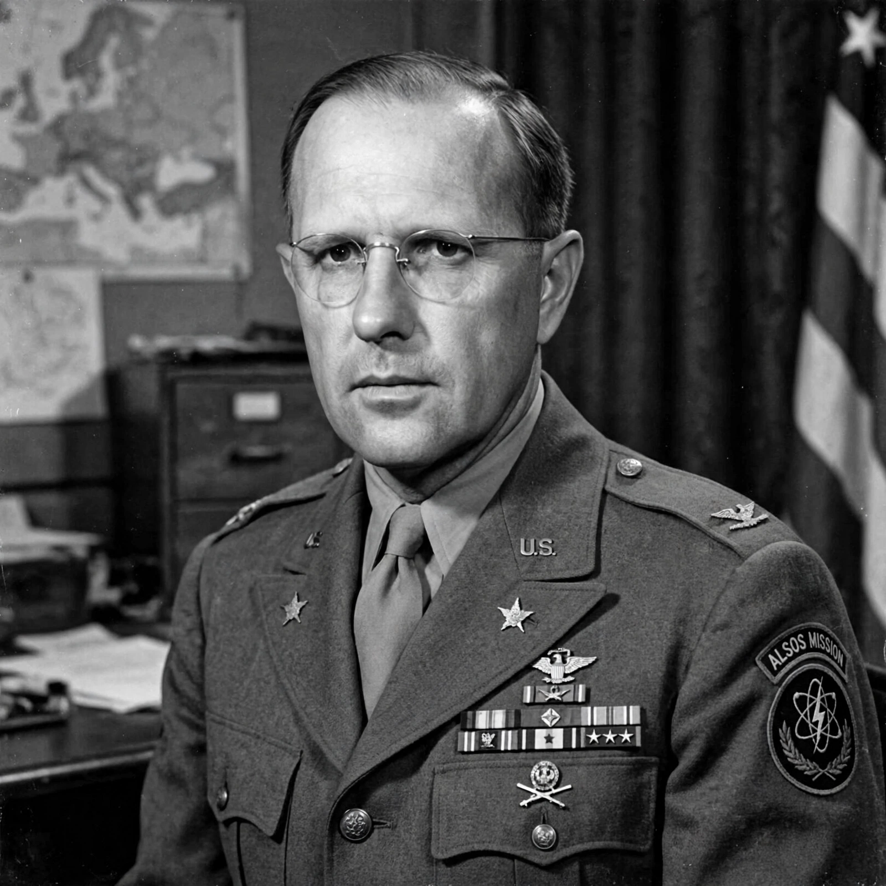

Boris Theodore Pash (born Boris Pashkovsky, 20 June 1900 – 11 May 1995) was a US Army officer of Russian descent who led the Alsos Mission in World War II to investigate the German nuclear weapons programme.
| Boris Pash | |
|---|---|
 | |
| Born | 1900, San Francisco |
| Died | 1995, Greenbrae, California |
| Allegiance | United States |
Son of a Russian Orthodox metropolitan, Pash served in WWI, worked in counterintelligence, investigated suspected subversion at the Berkeley Radiation Laboratory, and commanded Alsos teams that raced to capture German scientists, uranium and documents in France and Germany in 1944–45.
After the war he served with the CIA and Army roles in Europe and wrote The Alsos Mission (1969). He was inducted into the Military Intelligence Hall of Fame.